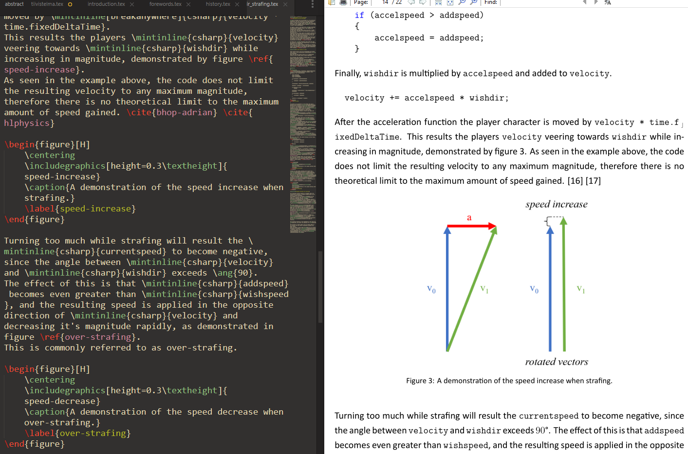
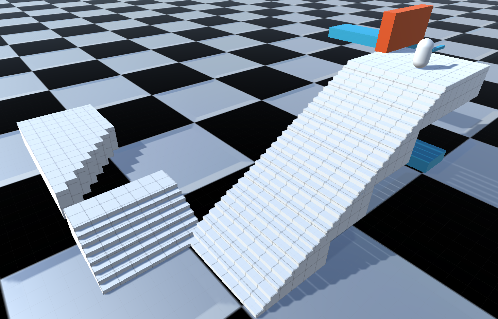

For the subject of my thesis I decided to go for something that was near my heart, Source Engine air strafing. I've been playing Source Engine games since my childhood and have been fascinated with the movement of various games and game modes. Especially Counter-Strike: Source game modes, surf and bunnyhop. For my thesis I decided to recreate the movement code of the Source Engine in Unity to achieve the same air strafing mechanic. The thesis covers the history of air strafing and the early lineage of the engines, theory and explanation of the mechanic, a practical game demo made in Unity to demonstrate how one could implement it into their own game. The thesis is written in english and can be found on Theseus.fi.
I opted to make my thesis with LaTeX instead of Microsoft Word since I wanted to learn a new way of typesetting documents. There were a lot of reasons that attracted me to LaTeX, such as the powerful bibliography tools and code listing packages that output very clean code blocks. The biggest hurdle when switching to LaTeX from Word, was the harsh learning curve. For example, adding pictures to your document is very straightforward in Word, and in LaTeX it requires a package you need to download and include in your project. Setting up the was more cumbersome than just opening a ready Word template, but I was confident that once I get past the start, my work would become more and more frictionless as I progressed. And eventually it did, after figuring out how to add code listings, manage citations, add pictures and so on, the actual writing process was merely limited by my own pace and not by my tools.
The demo provided me a test bed to demonstrate the practical uses of air strafing in games, and served as a tool to understand the calculations within the original Source Engine acceleration code that enabled air strafing. Implementing it myself gave a deeper understanding of the functionality of air strafing, and how it could be manipulated. Writing the code first before starting on the text of the thesis was a good move, since it forced me to understand the mechanic properly.
